# 결과물 소개
프로젝트 결과물에 대한 소개 페이지입니다.
# 1. K-POP 뉴스
빌보드 코리아와 SBS K-POP의 뉴스 컨텐츠를 크롤링하여 가져옵니다.
# 빌보드 코리아 크롤링
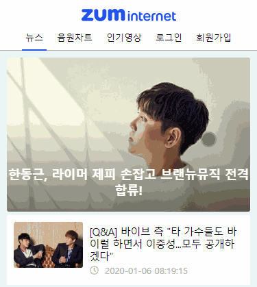 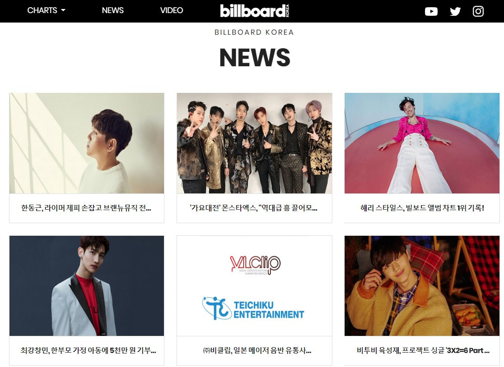
빌보드 코리아의 뉴스는 Headline Swipe 형태로 만들었습니다.
# SBS K-POP 크롤링
 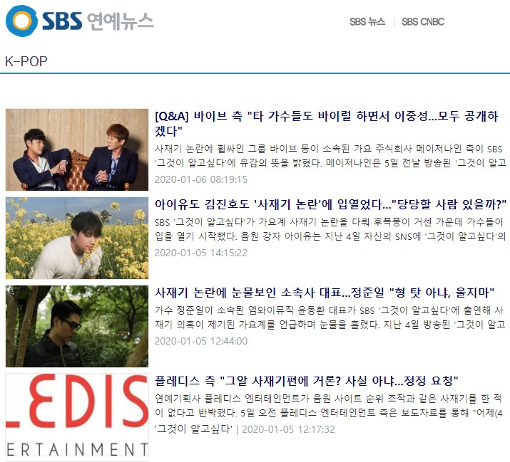
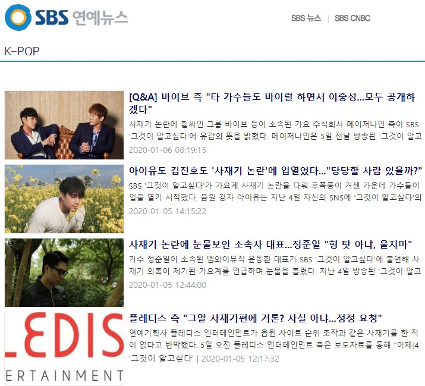
- SBS K-POP 뉴스는
infinite scroll기법을 이용하여 만들었습니다. 최대5 페이지를 가져옵니다. - 크롤링한 데이터는
캐시에 저장되며,1분 간격으로 크롤링을 합니다.
# 뉴스 상세 조회

뉴스 상세조회는 Native App 에서 사용되는 Bottom-top slide 형태로 만들었으며, 결과물을 크롤링하여 가져오도록 했습니다.
# 2. 음원차트
음원차트는 멜론 차트의 컨텐츠를 크롤링하여 메타 데이터로 사용했습니다.
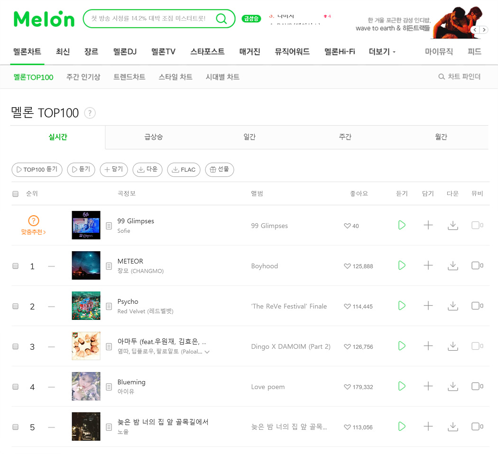
- 멜론에서 음원차트를 크롤링하여 가져옵니다.
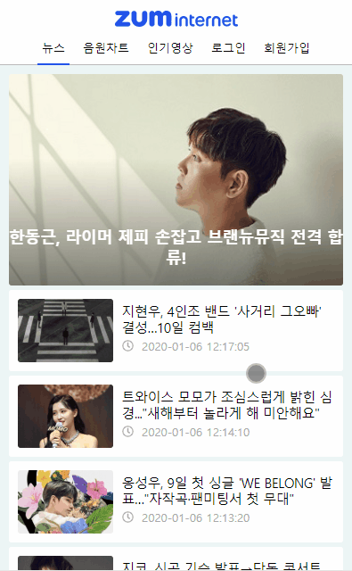 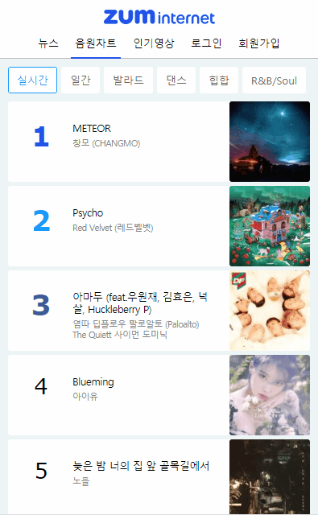
- 100개의 음원을
Infinite Scroll기법을 이용하여 가져옵니다. 실시간일간발라드댄스힙합R&B/Soul등 6개의 카테고리가 존재합니다.
# 3. 음원차트에 대한 유튜브 동영상
Youtube Search API를 이용하여 음원 제목을 기반으로 동영상을 가져옵니다.
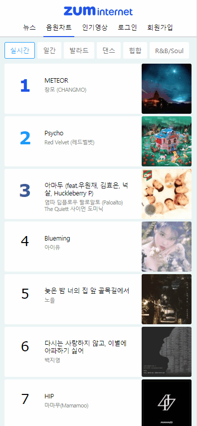 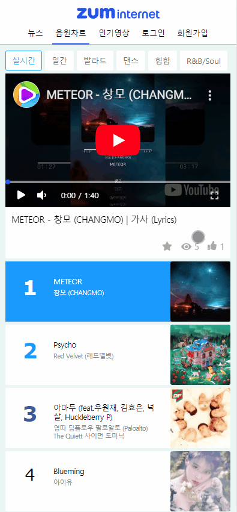
- 음원은 클릭하면 음원에 대한 유튜브 동영상을 재생합니다.
- 플레이어에서 Swipe 모션을 사용하면
이전/다음 음원에 대한 동영상을 재생합니다.
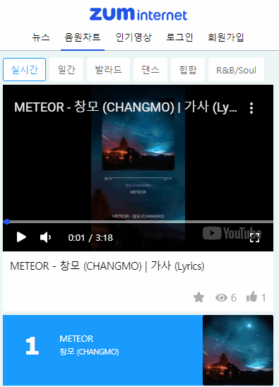
직접 제작한 컨트롤러를 통해서 동영상을 컨트롤할 수 있습니다.- 정지/재생 토글
- 음소거 토글
- 재생 시간 컨트롤
- 최대화/최소화
# 4. 회원가입/로그인
서비스에 회원가입 및 로그인을 할 수 있으며, 로그인 상태의 사용자는 즐겨찾기/좋아요 기능을 사용할 수 있습니다.
# 비회원의 제한
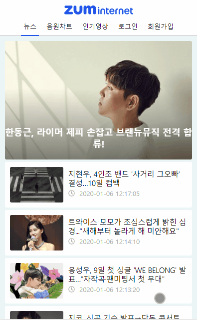
- 비회원은 좋아요와 즐겨찾기 기능을 이용할 수 없습니다.
# 회원가입
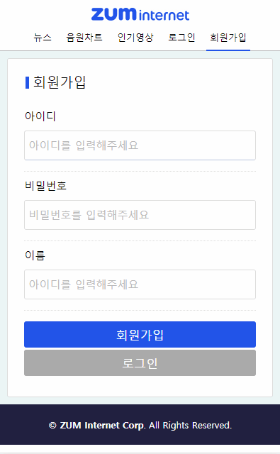
- 회원가입 페이지에서
아이디비밀번호이름등을 입력받습니다. - 중복된 아이디가 있으면
경고창(Modal Popup)을 통해 알립니다. - 회원가입이 완료되면
로그인 페이지로 이동합니다.
# 로그인
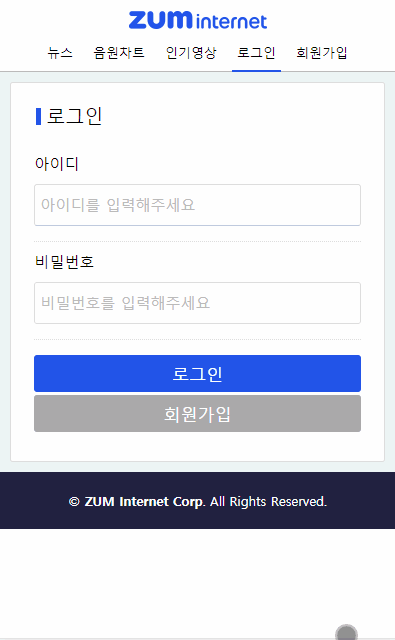
- 사용자가 입력한 정보가 잘못되었다면
경고창(Modal Popup)을 통해 알립니다. - 로그인에 성공하면
메인 페이지(뉴스)로 이동합니다.
# 즐겨찾기와 좋아요
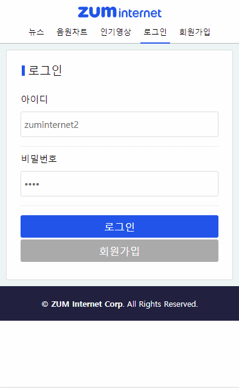
- 로그인 상태의 사용자는 즐겨찾기와 좋아요 기능을 이용할 수 있습니다.
# 5. 인기영상
동영상의 조회수와 좋아요를 기반으로 순위를 측정하여 인기영상 목록을 만듭니다.
인기도 = 조회수 + (좋아요 * 2)
# 좋아요 토글
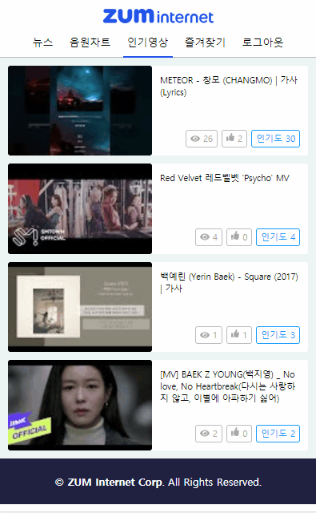
- 로그인 상태의 사용자는
좋아요 토글기능을 사용할 수 있습니다. - 좋아요를 누르면
인기도가 2 증가합니다.
# 조회수 처리
- 동영상 재상이 끝나면 조회수가 증가합니다.
- 조회수가 증가하면
인기도가 1 증가합니다.